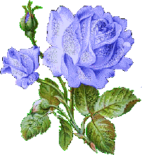

People may hear your words, but they feel your attitude. Some people say I have attitude - maybe I do... but I think you have to. You have to believe in yourself when no one else does - that makes you a winner right there. Being deeply loved by someone gives you strength, while loving someone deeply gives you courage. We waste time looking for the perfect lover, instead of creating the perfect love.
There is nothing on this earth more to be prized than true friendship. A real friend is one who walks in when the rest of the world walks out. Friends show their love in times of trouble, not in happiness. One of the most beautiful qualities of true friendship is to understand and to be understood.
Friends can help each other. A true friend is someone who lets you have total freedom to be yourself - and especially to feel. Or, not feel. Whatever you happen to be feeling at the moment is fine with them. That's what real love amounts to - letting a person be what he really is.
Don't walk behind me; I may not lead. Don't walk in front of me; I may not follow. Just walk beside me and be my friend.
Coming together is a beginning; keeping together is progress; working together is success. The real man smiles in trouble, gathers strength from distress, and grows brave by reflection. If you're not making mistakes, then you're not doing anything. I'm positive that a doer makes mistakes. A journey of a thousand miles begins with a single step.
When you know very little, you become arrogant and stubborn. When you know something moderately well, you understand the lacking and you always try to fill the gap in a cognitive process. When you know something very good, you just become humble and value everyone's opinion.
Do what you love to do and give it your very best. Whether it's business or baseball, or the theater, or any field. If you don't love what you're doing and you can't give it your best, get out of it. Life is too short. You'll be an old man before you know it
| Roll | Name | Group | Marks |
|---|---|---|---|
| 01 | Rodela | Arts | 1190 |
| 02 | Puspo | Science | 1180 |
| 03 | Sandha | Science | 1080 |
| 04 | Surovi | Arts | 1050 |
| 05 | Tithee | Commerce | 1035 |
| 06 | Beethi | Commerce | 1025 |
| 07 | Sarah | Arts | 1013 |